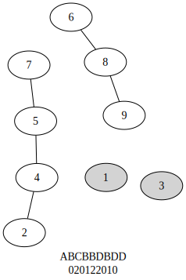
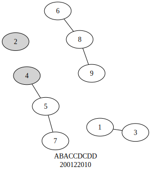
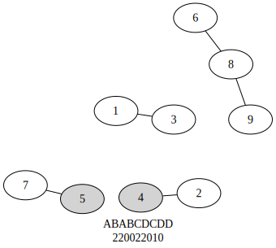
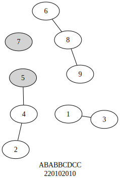
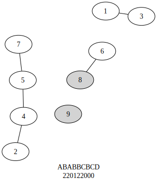

## code preamblefrom rhyme_functions import*import pygraphviz as pgvfrom pyeditdistance import distance as dimport pandas as pdimport graphvizfrom IPython.display import Imagefrom IPython.display import SVGfrom IPython.display import display
Introduction
Rhyme scheme information is presented in the tagged linegroup data in a variety of ways. One column contains the standard AABB-style rhyme schemes (henceforth ‘AB-scheme’), and another contains the rhyme_distances (hereafter ‘distance scheme’). In most situations where you will be searching, filtering, and comparing rhyme schemes, especially with the use of code, the rhyme distances will provide more flexibility and generality.
Types of schemes
AB-schemes
To construct an AB-scheme generally, start at the last word of the first line of the stanza. Label this line ‘A’. Any subsequent line that rhymes (meaning, the last word of that line rhymes with the last word of the current line), label those lines ‘A’. Move to the next unlabeled line, and continue labeling with ‘B’, and so on, until all lines are labeled.
regularized text
final word
AB-scheme
LO I the man, whose Muse whilom did mask,
mask
A
As time her taught, in lowly shepherds weeds,
weeds
B
Am now enforced a far unfitter task,
task
A
For trumpets stern to change mine Oaten reeds:
reeds
B
And sing of Knights and Ladies gentle deeds,
deeds
B
Whose praises having slept in silence long,
long
C
Me, all too mean, the sacred Muse areeds
areeds
B
To blazon broad amongst her learned throng:
throng
C
Fierce wars and faithful loves shall moralise my song.
song
C
Distance schemes
To construct a distance scheme, start at the first line of the stanza. Find the next line that rhymes, and count the distance away in lines (so that the next line is 1, then 2, etc) of the next line that rhymes. Label the current line with this distance. If no subsequent line rhymes, label the current line 0. (In the implementation here, this lookahead is only done up to some window size, in our case 4; so no distances will be found that are greater than 4.) Continue until all lines are labeled.
regularized text
final word
scheme
distance
LO I the man, whose Muse whilom did mask,
mask
A
2
As time her taught, in lowly shepherds weeds,
weeds
B
2
Am now enforced a far unfitter task,
task
A
0
For trumpets stern to change mine Oaten reeds:
reeds
B
1
And sing of Knights and Ladies gentle deeds,
deeds
B
2
Whose praises having slept in silence long,
long
C
2
Me, all too mean, the sacred Muse areeds
areeds
B
0
To blazon broad amongst her learned throng:
throng
C
1
Fierce wars and faithful loves shall moralise my song.
song
C
0
Both schemes largely overlap in what information they convey (though they are not truly equivalent); in fact, the code that searches the corpus calculates the distance scheme directly, and the AB-scheme is later deduced from this. The distance scheme more transparently encodes the rhyme information as a graph, where each line is a node and the edges (connections) are intended rhymes. Implicit in both of these schemes are the line numbers themselves; this is reflected in the order of the labels. The table below makes these explicit, and for brevity removes the words themselves so now only the line and rhyme information remains.
line
scheme
distance
1
A
2
2
B
2
3
A
0
4
B
1
5
B
2
6
C
2
7
B
0
8
C
1
9
C
0
The table can now be read as follows: line 1 has its closest rhyme 2 lines away, line 2 has its closest rhyme 2 lines away, line 3 does not have any subsequent rhymes, and so on. Or after some arithmetic, line 1 rhymes with line 3 (current line 2 + distance 1), line 2 rhymes with line 4 (2+2), and so on.
Rhyme as a relation
A relation\(R\) between elements of some set \(S\) is a subset of \(S \times S\). In modeling the relation of rhyming, the set \(S\) consists of words, and a pair of words are in \(R\) if and only if they rhyme. Uncontroversally, (bat,cat) is in \(R\), but (bat,love) is not. But the intensional definition of the rhyme relationship remains to be defined.
Perfect rhyme
Let’s first define an idealized notion of perfect rhyme. Intuitively, these are words that have identical rhyme stems. Assume the rhyme stem so far is just the final sequence in the word consisting of the final vowel plus any following consonants. Let the relation of perfect rhyme\(R_P\) be such that if two words have identical rhyme stems, they perfectly rhyme. Bat perfectly rhymes with cat is shorthand for (bat,love) \(\in R_P\). The relation \(R_P\) is therefore an equivalence relation:
\(R_P\) is transitive: if A perfectly rhymes with B, and B perfectly rhymes with C, then A perfectly rhymes with C.
\(R_P\) is reflexive: for all words A, A perfectly rhymes with A.
\(R_P\) is symmetric: if A perfectly rhymes with B, then B perfectly rhymes with A.
Imperfect rhyme
In actuality, rhymes are not all perfect. Let’s call relation of imperfect rhyme\(R_I\). This relation is meant to reflect the set of word pairs actually found in rhyming position (or inferred to be in rhyming position) in the corpus. Intuitively, it should still be reflexive (words still rhyme with themselves) and symmetric (if A rhymes with B, then B rhymes with A), though the notion of transitivity is less clear. (Do there actually exist situations where A is judged to rhyme with B, and B is judged to rhyme with C, but A is not judged to rhyme with C?) Thus \(R_I\) will not be treated as an equivalence relation a priori and instead the properties of it as a relationship will themselves be objects of study.
As the rhyme dictionary is not perfect, the actual set of pairs of words that are marked as rhyming will be an arbitrary collection (or at least, might trend towards an equivalence relation but will not categorically be one). For example, if a stanza is encountered that ends in the words “thee”, “be”, and “see”, and only the pairs (“thee”,“see”) and (“be”,“see”) are present in the rhyming dictionary, then a connected set of rhyming words will be found, but with a loss of transitivity (since (“thee”,“be”) is not found).
Implicit in the AB-scheme representation is that each rhyme group (or letter) is treated as an equivalence relationship: given a three-line stanza schemed AAAA, then it is (usually) safe to assume that line 1 rhymes with lines 2, 3, and 4; line 2 rhymes with 1, 3, 4; line 3 rhymes with 1, 2, and 4, and line 4 rhymes with 1, 2, and 3. Essentially, take any two rhyming words from this stanza, and they should rhyme.
What the distances schemes show instead is show the pair-level information about what specific rhyme pairs exist in the stanza, at the behest of clearly showing the overall groups of words that rhyme. For example, in a hypothetical stanza with an AB-scheme of AAA, there are two consistent distance schemes:
110
210
110 states that line 1 rhymes with line 2 (its next rhyme is a distance of 1 away), and that line 2 rhymes with line 3 (its next rhyme is also a distance of 1 away). This is what you would expect to find assuming a perfect rhyme relation with a dictionary to match. The distance scheme 210, however, says explicitly that line 1 rhymes with line 3 (being a distance of 2 away), and that line 2 also rhymes with line 3 (being a distance of 1 away). This still results in a connected subset of pairs you would expect to find in a perfect AAA representation of the stanza, but with the loss of transitivity regarding lines 1 and 2. It could be the case that the word pair from lines 1 and 2 is simply a gap in the dictionary (in which case it can be inferred), or it could be an accidental rhyme (maybe line 2 is not meant to rhyme with line 3 but the pair is erroneously in the rhyming dictionary). Such is a question for further investigation, but the crucial point here is that the distance scheme gives us a hint that something is not quite as expected.
Schemes as graphs
A graph, in purely mathematical terms, is simply a pair of two sets: an edge set and a vertex (or node) set. Edges are connections between vertices (or nodes). For our purposes, the edge set of a rhyme graph will be the rhyming relation, and nodes are lines of poetry. A connection, then, between a node labeled “1” and a node labeled “3” indicates that lines 1 and 3 rhyme. Each type of rhyme scheme essentially encodes this information, so graphs will be used to both show the rhymes schemes visually but also to take advantage of the mathematical properties of graphs when working with rhyme schemes directly.
The connections from the previous table are shown as an explicit graph below; the positions of the nodes are arbitrary; the only information encoded is that which is explicitly shown (i.e. the edges and the nodes).
This graph has three separate, connected parts (or components). Each connected component represents a group of words that rhyme: the 1-3 component is the “A” group in terms of the AB-scheme, the 2-4-5-7 component the “B” group, and the 6-8-9 component the “C” group. Note that because this graph representation came directly from the distance scheme, we can annotate the graph with the words and rhyme groups from the original stanza for clarity.
The rhyme graph now clearly shows six different connections between nodes, or rather 6 calculated rhymes. The previous two graphs encode the same type of rhyme scheme, the only difference is how they are visually presented.
Some things to note at this point: the rhyme search procedure of the corpus looks for only the next closest rhyme before moving on, thus if an intended scheme is AAA, then lines 1 and 2 are connected, as well as 2 and 3, but the connection between 1 and 3 is not explicitly shown. These can be added for any graph by calculating the transitive closure of that graph, but since we are building our graphs based on the results of the code directly they are not shown in the above examples. In other words, the graphs built from the distance schemes directly are the transitive reduction of the intended rhyming relation.
Oneoffs and rhyme scheme comparisons
The rhyme search procedure is not perfect. There are both false negatives–intended rhyme pairs that the search missed–and false positives–words tagged as a rhyme that are not intended to rhyme. Among other things, this means that if there is a target scheme in mind, such as Rhyme Royal (ABABBCC), it is likely that many instances of intended Rhyme Royal will have a scheme that is close to but not exactly ABABBCC.
The general focus of this section is to answer the question: given two schemes, how can we quantify how similar/different they are?
Let’s take a case study of a Spenserian stanza with a target AB-scheme of ABABBCBCC. With no issues in rhyme detection, this results in a distance scheme of 220122010. The following graphs below represent all possible distance schemes that contain all the rhyme connections in 220122010 except for one. So, these are cases where we can imagine a Spenserian stanza was intended, but the rhyme detection missed a rhyme, for whatever reason.
Code
def gv_pairs(distances): gv_pairs = []for s, e in distances_to_pairs(distances).items():if e != []: gv_pairs.append((s+1, e[0]+1))return gv_pairstarget_distance = [2,2,0,1,2,2,0,1,0]ab_scheme = distances_to_ab(target_distance)dist_str =''.join([str(d) for d in target_distance])G = pgv.AGraph(strict=False)G.graph_attr["label"] =f"{ab_scheme}\n{dist_str}"for pair in gv_pairs(target_distance): G.add_edge(*pair)G.layout()G.draw('../figures/pgv-target.png',format='png')# Image('../figures/pgv-target.png')oneoffs = get_oneoffs(target_distance)image_paths = []oneoff_dict = defaultdict(list)for oo, dist in oneoffs.items(): ab_scheme = distances_to_ab(dist) dist_str =''.join([str(d) for d in dist]) oneoff_dict['ab_scheme'].append(ab_scheme) oneoff_dict['dist_str'].append(dist_str) oneoff_dict['pair_removed'].append(oo) oneoff_dict['distances'].append(dist) G = pgv.AGraph(strict=False) G.graph_attr["label"] =f"{ab_scheme}\n{dist_str}"for pair in gv_pairs(dist): G.add_edge(*pair) G.add_edge(*oo, style="invis")for line in oo: G.add_node(line, style="filled") oneoff_dict['pgv'].append(G) G.layout() path =f'../figures/pgv-{dist_str}.svg' image_paths.append(path) G.draw(path, format="svg")# images = []# for p in image_paths:# images.append(SVG(filename=p))# display(*images)output ="::: {layout-ncol=3}\n"for p in image_paths: output +=f"\n\n"output +=":::"print(output)





Figure 1
Visually it is clear where the differences are: in each graph, the shaded nodes are those that are missing a rhyme relation with respect to the target scheme. The AB-scheme and distance scheme are shown below each graph. The six schemes above are referred to as oneoffs of the target scheme. A oneoff is a scheme that is identical to the original but with exactly one fewer rhyme pair (the same graph minus one edge).
String edit distance
String edit distance is a measure of how different two strings (linear sequences of symbols) are, by measuring additions, removals, and substitutions between them. For example, bat and cat have an edit distance of 1 (1 substitution), while bat and cats have a distance of 2 (1 substitution and 1 addition).
As both an AB-scheme and a distance scheme can be represented as simply a string of characters: say, ABABBCBCC and 220122010, it is tempting to compare scheme similarity with edit distance; however, edit distance should only be used with distance schemes.
The six oneoffs of the target scheme 220122010 (ABABBCBCC) are all enumerated in the table below. Each row represents one of the graphs above, and shows the resulting distance scheme, and the pair of line numbers that is missing from the oneoff, and various measures of edit distance.
Code
target_distance = [int(x) for x in'220122010']oneoffs = get_oneoffs(target_distance)oneoff_dict = defaultdict(list)for oo, dist in oneoffs.items(): ab_scheme = distances_to_ab(dist) dist_str =''.join([str(d) for d in dist]) oneoff_dict['ab_scheme'].append(ab_scheme) oneoff_dict['dist_str'].append(dist_str) oneoff_dict['pair_removed'].append(oo) oneoff_dict['distances'].append(dist)df = pd.DataFrame(oneoff_dict)df['target_ab'] = distances_to_ab(target_distance)df['target_dist'] =''.join([str(d) for d in target_distance])df['ab_edit_distance'] = df.apply(lambda x: d.levenshtein(x['ab_scheme'], x['target_ab']),axis=1)df['dist_edit_distance'] = df.apply(lambda x: d.levenshtein(x['dist_str'], x['target_dist']),axis=1)keep ="ab_scheme dist_str pair_removed ab_edit_distance dist_edit_distance".split()df[keep]
ab_scheme
dist_str
pair_removed
ab_edit_distance
dist_edit_distance
0
ABCBBDBDD
020122010
(1, 3)
4
1
1
ABACCDCDD
200122010
(2, 4)
5
1
2
ABABCDCDD
220022010
(4, 5)
4
1
3
ABABBCDCC
220102010
(5, 7)
1
1
4
ABABBCBDD
220120010
(6, 8)
2
1
5
ABABBCBCD
220122000
(8, 9)
1
1
Figure 2: Comparing the oneoffs of 220122010
The ab_edit_distance column simply takes the AB-schemes as strings and calculates the string edit distance between them. Note that in general, the earlier in the stanza the rhyme difference is, the higher this edit distance is likely to be, since an early change in how a line is labeled will propagate down to the rest of the linegroup. This is not a recommended way to compare line schemes.
However, taking the distance schemes as strings, and comparing those with string edit distance, gives a reliable count of the differences between the two schemes in question. Every oneoff has a count of 1 in the dist_edit_distance column, as in this representation, if two strings are identical except for a single rhyme, they will differ in only the position of the first word in that rhyme pair.